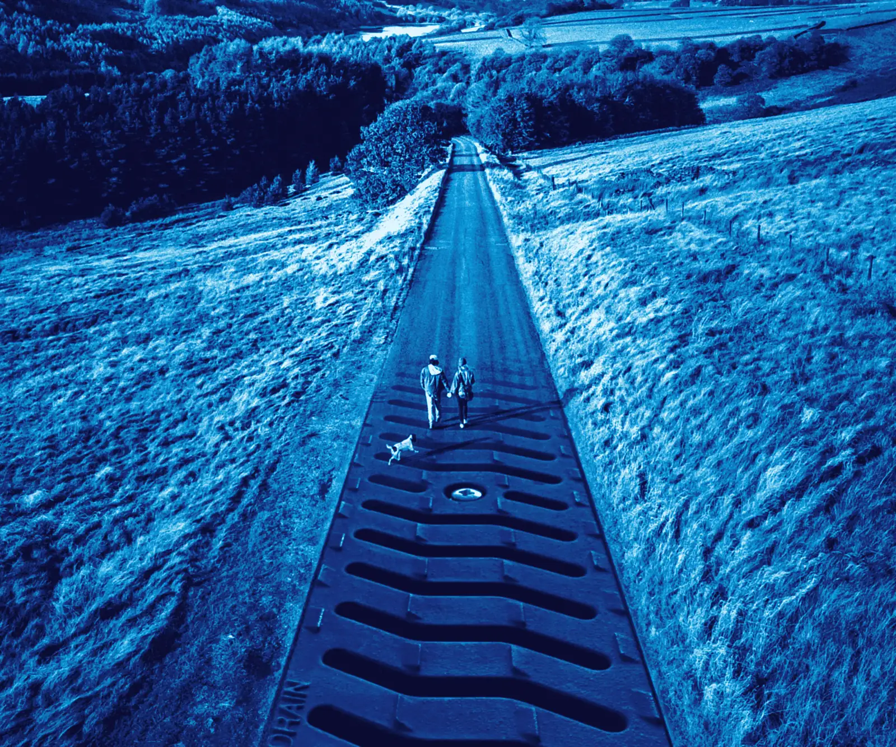

01
STORA LIGHT
Klasa A15
Odwodnienia przydomowe: wokół domów, tarasów i alejek.
- Szerokość
- B = 100
- Korytko
- polipropylen
- Ruszt
- ocynkowany szczelinowy A15

Dziesięć linii korytek STORA-DRAIN, od klasy A15 do F900: od tarasu i podjazdu przy domu po parkingi, drogi i tereny przemysłowe. Produkujemy w Jeleniej Górze, sprzedajemy w całej Europie.
Dobierz korytko do obciążeniaKlasa według normy PN-EN 1433 mówi, jaki nacisk przeniesie korytko razem z rusztem. Znajdź miejsce, w którym będzie leżało odwodnienie, i sprawdź pasujące linie.
Pasy przy krawężnikach, parkingi i garaże podziemne, tereny handlowe.
Klasa całego odwodnienia zależy od zastosowanego rusztu. W razie wątpliwości opiekun regionu dobierze korytko do projektu.
Korytka z polimerobetonu z rusztami ocynkowanymi lub żeliwnymi. Szerokości w świetle od 100 do 300 mm, wersje ze spadkiem i bez spadku.
Odwodnienia przydomowe: wokół domów, tarasów i alejek.
Woda deszczowa z terenów dla pieszych i rowerzystów.
Ruch pieszy, rowerowy i samochody osobowe, zależnie od rusztu.
Korytka z ochroną krawędzi, ruszt CENTRIC dla pełnej estetyki nawierzchni.
Kanały do odprowadzania wody z parkingów podziemnych.
Ciągi piesze, parkingi i drogi na terenach handlowych. Ze spadkiem lub bez.
Tereny o małym i średnim natężeniu ruchu.
Tereny przemysłowe o średnim i dużym natężeniu ruchu.
Tereny przemysłowe o dużym natężeniu ruchu, krawędź żeliwna.
Tereny przemysłowe, drogi i tereny specjalne.
Woda znika w szczelinach rusztu, a teren zostaje suchy i gotowy do pracy. Polimerobeton nie chłonie wilgoci i dobrze znosi zimowe mrozy, dlatego korytka pracują o każdej porze roku.
Materiał o bardzo wysokiej trwałości, odporny na wilgoć i na niskie temperatury w zimie.
W liniach PARKING i SUPER dostępne korytka bezspadkowe oraz ze spadkiem.
Posesje prywatne, podjazdy, garaże podziemne i wielopoziomowe, tereny handlowe i parki przemysłowe.
Korytka STORA-DRAIN powstają w naszym zakładzie przy ul. Spółdzielczej 58. Od czerwca 2024 roku marka należy do EJ Group, a produkcja, zespół i siedziba zostały na miejscu.
Wszystko, czego potrzebuje projektant i wykonawca, w jednym miejscu: karty linii, deklaracje, rysunki i warunki współpracy.
Katalog i cennik 2026PDF, wszystkie linie
Karty katalogowe 10 liniiPDF, od LIGHT do SUPER
Deklaracje właściwości użytkowychDWU dla każdej linii
Rysunki techniczneprzekroje korytek i rusztów
Przechowywanie i wytyczne montażudla wykonawców
Certyfikaty ISO 9001, ISO 14001system zarządzania
Ogólne warunki sprzedażyOWS
Ogólne warunki gwarancjiOWG
Właściwości kanałów STORA-DRAINPDF, zestawienie
Zadzwoń bezpośrednio do osoby, która obsługuje Twoje województwo. Pomożemy dobrać linię, przygotujemy ofertę i ustalimy dostawę.